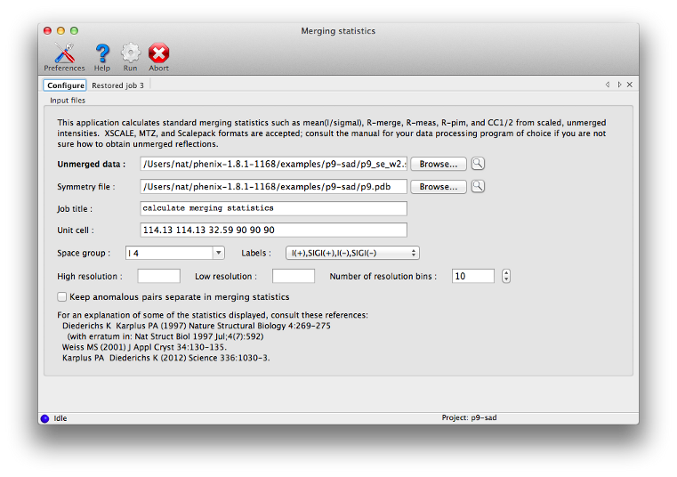
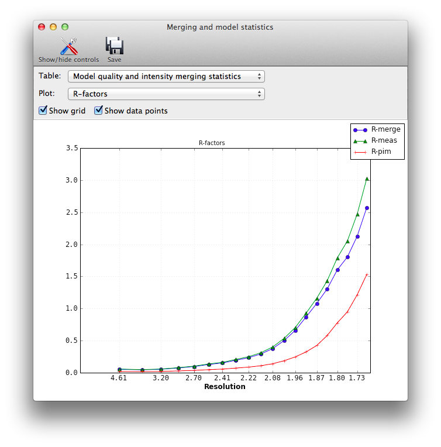
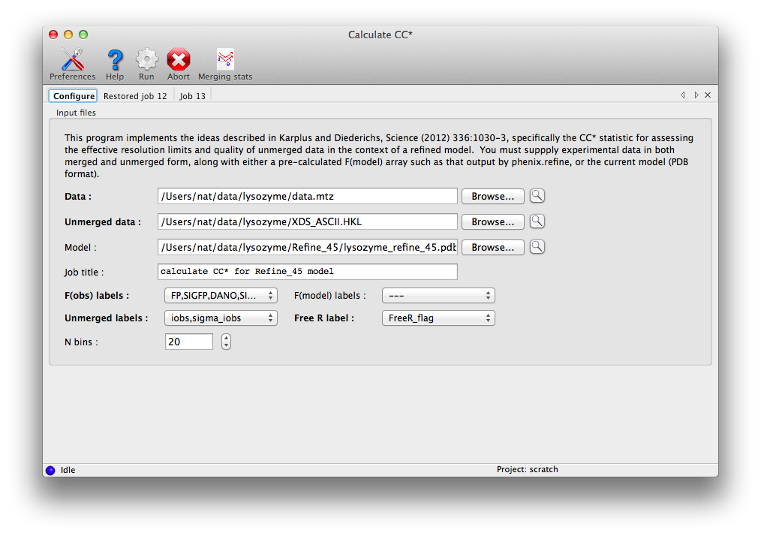
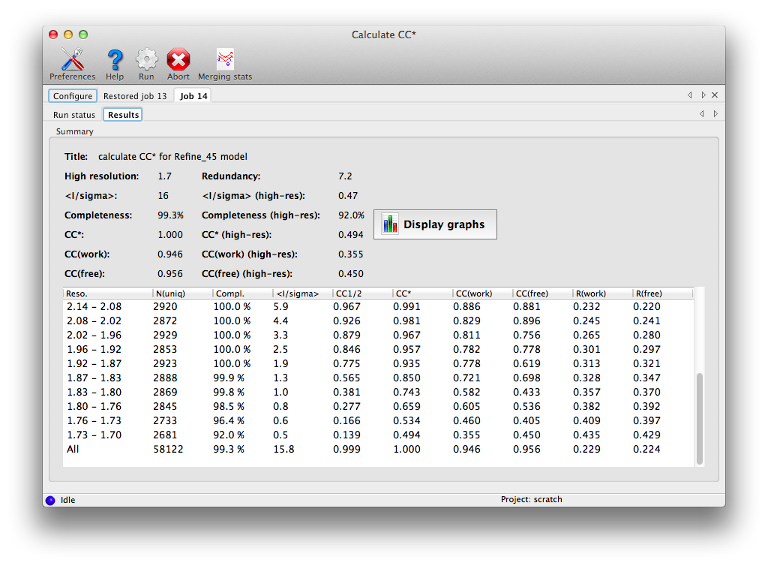
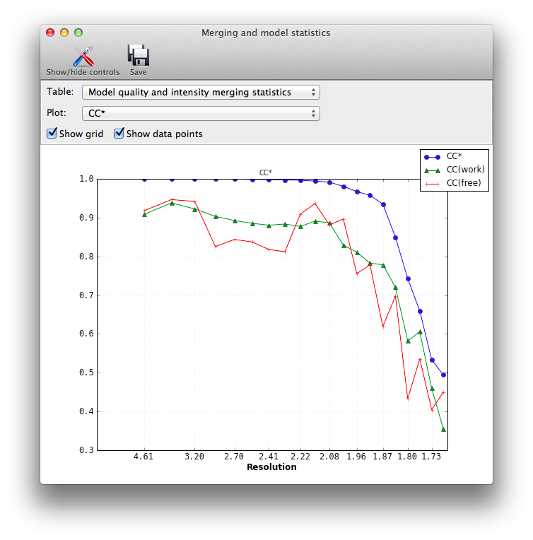

Most of the programs in Phenix assume that the input data, regardless of type or format, are already both scaled and merged to contain only unique reflections. The major exception is AutoSol, which can accept certain unmerged files (for a more limited set of formats, primarily Scalepack) and performs its own local scaling. In other situations, some programs will automatically merge the data themselves if necessary, discarding any information about the variance of individual observations.
A note on terminology: "unmerged" in this context means that the original individual observations are kept separate after scaling, including symmetry-related reflections as well as multiple observations of the same h,k,l. This is distinct from "anomalous" data, where the Friedel mates h,k,l and -h,-k,-l are not merged, but each of these is (usually) still the average of multiple observations. Although many programs in Phenix deal with anomalous data, they are not useful for calculating merging statistics.
Several utilities are available in Phenix which use unmerged intensities to calculate various data quality-related metrics. These include Xtriage, which will display standard merging statistics; the standalone version of this routine, phenix.merging_statistics; a separate utility for calculating CC* (Karplus & Diederichs 2012), phenix.cc_star; and the Table 1 program. Their use as it relates to unmerged data is described below. Note that due to implementation details, small numerical differences (up to a few tenths of a percent) may occur between the originally reported statistics in the processing logfiles, and the numbers reported by Phenix.
Important: we have provided a list of statistics with pointers to the relevant publications in the "Details" section, but this document does not attempt to explain the mathematics or logic behind the statistics calculated here. We strongly recommend that you read the listed references; the publication(s) associated with the data processing software used may also be useful (see for example Evans (2011)).
If you want to experiment with these programs and do not have any data of your own to use, the Phenix installation includes an unmerged data file in the p9-sad example:
$PHENIX/examples/p9-sad/p9_se_w2.sca
The format does not contain complete symmetry information (and the space group is specified incorrectly), but you can use the symmetry information in p9.pdb in the same directory.
The procedure differs between various data-processing software; these are the methods we are familiar with:
- xia2: the DataFiles directory will contain a file in Scalepack format, ending in "_unmerged.sca". No additional steps are required.
- aimless (CCP4): the OUTPUT keyword has an UNMERGED option.
- XDS: the file named XDS_ASCII.HKL output by CORRECT will contain unmerged data. If you are using XSCALE to scale data from multiple crystals, add the keyword MERGE=FALSE to the input script.
- HKL2000: in the Macros tab, in the Scaling section type "no merge original index", then re-run scaling (with a different file name than you used for merged data). This is currently incompatible with the "automatic correction" option, which will always output a merged file.
Note that unmerged Scalepack format does not include the unit cell, so symmetry needs to be supplied from a different source (this is handled automatically in many of the programs below). MTZ and XDS formats include complete symmetry. Not all files in these formats are necessarily suitable: in particular, note that MTZ files output by Mosflm have not had scaling performed yet.

phenix.merging_statistics is a simple program to calculate the standard statistics output by most data processing software, such as mean(I/sigma), redundancy, R-merge, R-meas (Diederichs & Karplus 1997), R-pim (Weiss 2001), CC1/2, and others. The input may be in any format, including unmerged XDS, unmerged Scalepack, multi-batch MTZ, or SHELX (the latter will only work on the command line, however). The number of resolution bins is set to 10 by default, but is adjustable by the n_bins parameter. All data will be used unless the high_resolution or low_resolution parameters are set; the program does not attempt to identify an appropriate high-resolution cutoff on its own. Both a command-line tool and a GUI (pictured above) are available. The output in either case is a table of statistics by resolution bin:
Resolution: 28.53 - 1.75 Observations: 145453 Unique reflections: 21557 Redundancy: 6.7 Completeness: 99.92% Mean intensity: 18672.0 Mean I/sigma(I): 14.9 R-merge: 0.073 R-meas: 0.079 R-pim: 0.030 Redundancies (non-anomalous): 1 : 50 2 : 163 3 : 597 4 : 1766 5 : 1869 6 : 3731 7 : 5512 8 : 5723 9 : 1526 10 : 490 11 : 74 12 : 53 13 : 3 Statistics by resolution bin: d_max d_min #obs #uniq mult. %comp <I> <I/sI> r_mrg r_meas r_pim cc1/2 28.53 3.77 15699 2254 6.96 99.87 78997.8 23.4 0.061 0.066 0.025 0.997 3.77 2.99 15703 2182 7.20 99.95 47400.1 23.1 0.061 0.066 0.024 0.997 2.99 2.61 15641 2172 7.20 100.00 17930.9 21.1 0.074 0.080 0.030 0.996 2.61 2.37 15309 2138 7.16 100.00 10520.1 18.6 0.090 0.097 0.036 0.995 2.37 2.21 15044 2146 7.01 99.95 9103.8 17.2 0.093 0.101 0.038 0.995 2.20 2.07 14571 2145 6.79 100.00 6560.2 13.5 0.108 0.117 0.045 0.993 2.07 1.97 13973 2135 6.54 100.00 5016.1 10.8 0.121 0.131 0.051 0.992 1.97 1.89 13540 2141 6.32 100.00 3620.6 8.6 0.145 0.158 0.062 0.984 1.88 1.81 13010 2104 6.18 99.95 2070.5 6.8 0.197 0.215 0.085 0.980 1.81 1.75 12963 2140 6.06 99.49 1477.4 5.6 0.247 0.270 0.108 0.970 28.53 1.75 145453 21557 6.75 99.92 18672.0 14.9 0.073 0.079 0.030 0.998
In the GUI version, plots are also available:

Xtriage (Zwart et al. 2005) will also calculate these statistics if provided with unmerged intensities; in the GUI, these will appear in an extra tab before the data quality analyses.
This is an implementation of the method outlined in Karplus & Diederichs (2012) for determining the optimal resolution cutoff, as an alternative to the traditional criteria such as limits on R-merge or I/sigma. It is essentially a combination of phenix.merging_statistics with the recalculation of R-factors for the model. The statistics CC* is an estimate of the "true" CC of the data under examination to the (unknown) true intensities. This places it on the same scale as CC(work) and CC(free) for the model and data, and the relationship between these statistics can be used as a guide for truncating the data.

Required inputs are unmerged intensities, merged data (either amplitudes or intensities - if the latter, French&Wilson treatment will be performed), R-free flags, and either a pre-calculated F(model) array, which is output by programs like phenix.refine, or the current refined model. The results should be essentially the same in either case, but supplying F(model) directly will run faster. The statistics overlap with those reported by the merging program, but with the addition of R-factors and CCs for model/data agreement.


This utility generates the standard Table 1 of crystallographic statistics found in most structure publications. If unmerged data are included along with the merged data and R-free flags, the intensity merging statistics will be calculated from these instead of parsing the data processing logfiles. We recommend that you use the unmerged data if available, as they are more reliably parsed than logfiles.
Note that the programs listed above display slightly different subsets of these statistics.
Mean(I/sigmaI): the signal-to-noise ratio. Traditionally the data are often cut off at the resolution where this statistic declines to 2, but this may exclude genuine measurements.
Redundancy or Multiplicity: the average number of observations of each reflection.
R-merge or R-symm: the simple merging R-factor for the multiple observations. Ideally this should be as low as possible, but for reasons discussed in the listed references, using it as a resolution cutoff is problematic. (Note that it will always increase significantly in the high-resolution shells.)
R-meas or R-rim: an alternative to R-merge which is intended to be independent of redundancy. See Diederichs & Karplus (1997) for explanation.
R-pim: another alternative to R-merge, intended to show the precision of the measurements. See Weiss (2001).
CC1/2: the correlation of one half of the observations (chosen at random, but with approximately even distribution for each reflection) to the other half. A similar statistic is used in electron microscopy; see Karplus & Diederichs (2012) for more information.
CC*: a modification of CC1/2, intended to show the true correlation of the observed data to the unknown "true" intensities. Used in conjunction with CC(work) and CC(free). See Karplus & Diederichs (2012).
CC(work) and CC(free): correlation of the observed intensities to the model-based intensities, for the work and test sets respectively. Should be on the same scale as CC*.